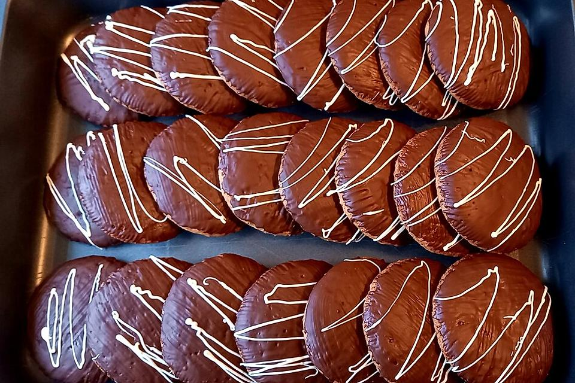

Weiche Lebkuchen
Zutaten für 1 Portionen
- 75 g Margarine
- 125 g Zucker
- 2 Ei(er)
- 1 TL Kakaopulver
- 1 TL Zimt
- 1 Msp. Nelkenpulver
- 100 g Zitronat, gemahlen
- 100 g Orangeat, gemahlen
- 150 g Nüsse, gemahlen
- 125 ml Milch
- 250 g Mehl
- 2 Tropfen Bittermandelaroma
- 1 Pck. Backpulver
- n. B. Oblaten für Lebkuchen
- 1 Pck. Kuvertüre, Vollmilch- oder Zartbitter-
Zubereitung
Arbeitszeit ca. 30 Minuten Gesamtzeit ca. 30 Minuten
Den Backofen auf 150°C vorheizen. Margarine, Zucker, Eier, Zimt, Kakao und gemahlene Nelke schaumig rühren. Zitronat, Orangeat, Nüsse, Milch, Mehl, Bittermandelöl und Backpulver gut unterrühren.
Nun ein Backblech mit Backpapier auslegen, darauf die Oblaten verteilen und darauf je 1 EL Teig portionieren. Mit einem feuchten Messer glatt streichen. Auf der mittleren Schiene im Ofen 10 Minuten backen. Die Lebkuchen auskühlen lassen und dann mit der geschmolzenen Kuvertüre bestreichen.
Rezept von: Gelöschter Nutzer Rezept